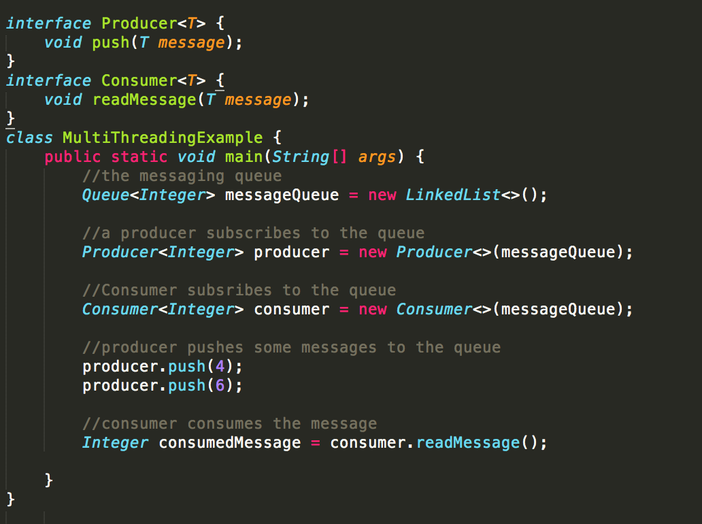
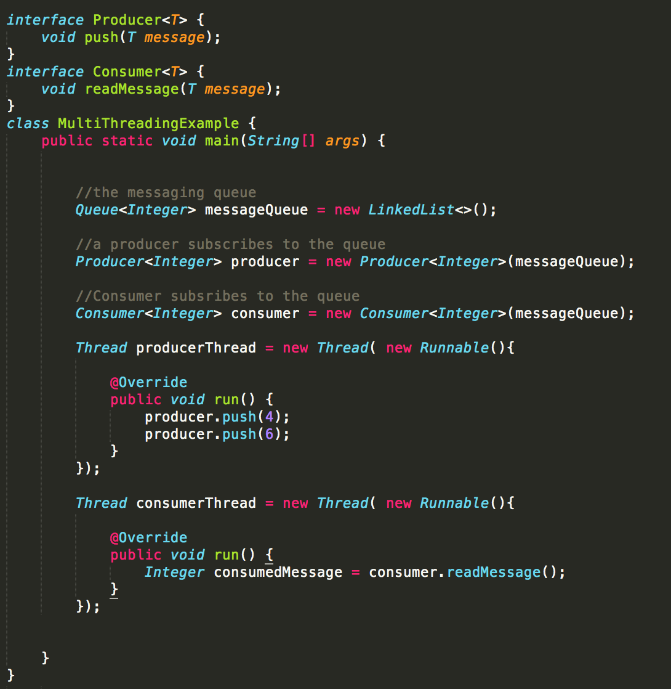
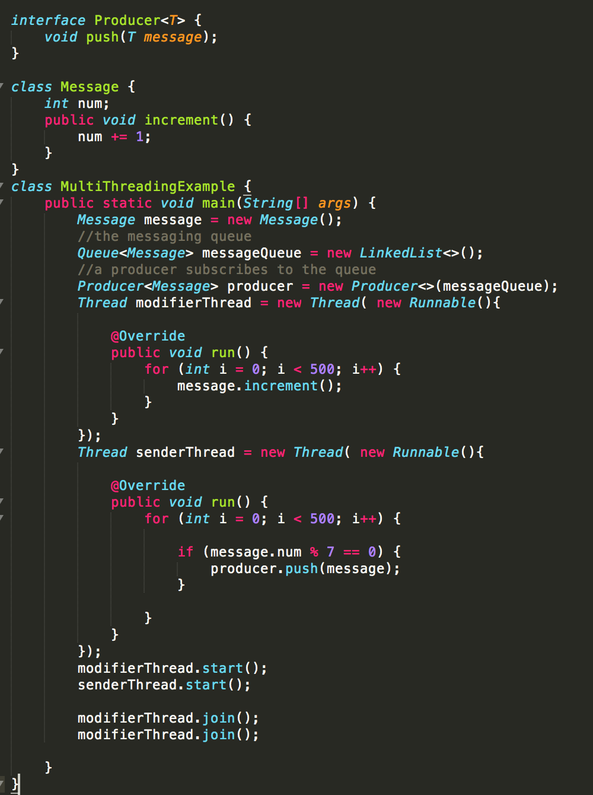
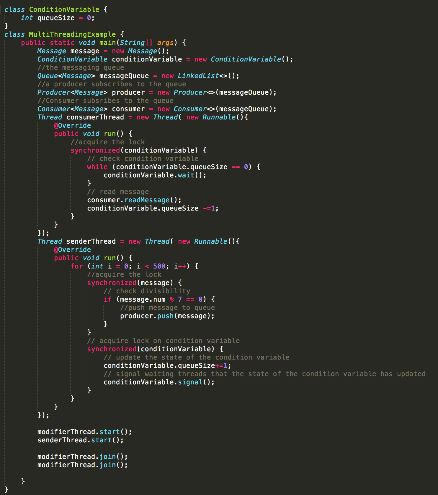

System design
Distributed systems, multi-threaded programming, concurrency
Concurency, parallelism & distributed systems
We go about most of our day juggling multiple tasks. We start our day by making breakfast, and while breakfast is getting ready, we stretch in the mean time or prepare things to read for our commute to work.
At the office, we initiate a deployment process for a change we want to deploy, and while the application is deploying, we will either start to work on a different technical task, or decide to take a coffee break. Then while the coffee machine is in the process of making a Latte, we go and quickly grab some snacks from the kitchen counter.
We're quite adept at wisely handling multiple tasks throughout the day. At the same time, however, we can only do a single thing. We can’t get coffee while we’re in the process of initiating a deployment process; we can’t stretch while we’re actively cooking breakfast. We also can’t juggle our way through every type of task. Some tasks will depend on other tasks. Regardless, we synchronize and execute our actions in a such way as to optimize our day. These situations are analogous to the concepts of concurrency and parallelism. Parallelism refers to the ability of a system to execute multiple tasks at the exact same time, while concurrency refers to the ability of a system to process multiple tasks independent of one another. However, concurrent tasks may or may NOT be executed simultaneously. If a system can execute tasks in parallel, then it must be a concurrent system as well. The other way around, however, is not the case.
These two concepts play a special role in distributed systems in which a vast number of resources are connected over a network, interact with one another, and execute a set of tasks. In distributed systems, a network of nodes and their resources mimick a single machine with each component executing its task independently and in parallel.
The way components in a distributed system juggle through their tasks is not unlike how we reason our way through the tasks we execute each day. Each machine must be able to use its local resources and execute its tasks in an optimal way.
So integrating concepts of parallelism & concurrency helps build a distributed system whose components co-operate in a seamless and well orchestrated manner to execute the neccessary protocols. For exampke, imagine there is an application that produces messages into a Kafka cluster(a messaging system), and there is also a consumer application that consumes the messages from Kafka on the other end. This consumer application will then process the messages and update some database.
If none of the applications in this scenerio are utilizing concurrency and/or parallelism, this is what's most likely to happen:
- The consumer application would receive one message at a time
- Process that content while other tasks wait
- Put the processed content to the database
This would result in a significant delay to the overall flow of data in the system and is therefore far from ideal.
One improvement that can be made to the consumer application is to have one independent ‘piece’ of the application retrieve content from Kafka, then another ‘piece’ would process the content and update the database. There can be more than one piece of the application update the database. Each 'piece' is capable of executing its tasks independently. This is just a minor improvement, however, and there are more improvements that can be made to the system. A lot of the improvements would depend on what exactly the application is doing, the nature of data it’s dealing with, and the configurations of Kafka & the database.
Two possible technical terms that describe the independently executeable `pieces` are 'Threads' & 'Processes'. A thread is the simplest independently executable piece of code by the operating system, and a process is simply a running instance of a program (a set of instructions). Threads divert functionality away from the main sequence of execution and operate in their own sequence of execution within a single process. It may be a single processor that’s juggling through these threads & processes, or there may be more than one processor(in which case parallelism is possible).
Example: There is a message queue, and, in the interest of simplicity, there is one application that will produce messages to the queue, and also consume messages from the queue. The sequence of events in a single threaded environment will look something like this:
This particular approach doesn’t make much sense. At the very least producers and consumers should be independent entities. So, it makes more sense to have the consumers and producers operate in separate threads.
Now say the producer is modified so that only numbers that are divisible by 7 are pushed into the queue. And to make things run faster, There are now two producer threads. One producer thread will be responsible for repeatedly incrementing the shared number while the other thread will be responsible for checking the divisibility of the number and pushing it to the queue.
The code in the picture above won’t always produce the desired result. Numbers that aren’t divisible by 7 could be pushed into the queue. This could happen due to the lack of co-ordination between the two threads when accessing shared data(also known as the 'critical section'). If the value of message is the number 7, the producer thread responsible for sending the messages will checks the number's divisibility, and before it sends the message, it could be switched out by the OS. The other producer thread may then go and increment the current value of the message to either 8 or 9. By the time the sender thread is active again and sends the message, the number in the message will no longer be divisible by 7. This event is known as a race condition, and it happens when multiple threads try to race their way through the shared data.
There are two OS concurrency constructs that help prevent race conditions. The first construct is known as a Mutex. It can be thought of as a lock used to guard the critical section. Once a thread acquires a mutex, only that thread can access the critical section. It will have to let go of the lock for other threads to gain access. Once a thread releases a mutex, most mutex implementations arbitarily choose one of the waiting threads.
The second concurrency construct that helps prevent race conditions is a semaphore. A semaphore is used to restrict access to a critical section to a fixed number of threads. It’s analogous to trying to get a reservation at a cafe. If there is no table available at the cafe, new customers can’t get in. But when a table frees up then a new person can enter the cafe. Thread pools, for example, are implemented using semaphores. If the consumer application in the Kafka-based data pipeline example above has a consumer thread pool size of 8, that means a maximum of eight threads at a time can consume from Kafka.
Semaphores are also used as a signaling mechanism between threads. Semaphores can be used in the above message queue example to have the producer thread signal the consumer thread/s that content has been pushed into the queue.
Another important concurrency construct that is specific to programming languages than the OS is a Monitor. It combines the functionalities of a mutex and a semaphore, but it’s best to think of a Monitor as a Mutex with an an extra feature. The reason is because only a single thread can enter the monitor and access the critical section at a time. This extra feature that monitors have is the concept of condition variables. Based on the state of these condition variables, a thread can either lock and access a critical section or wait until the criteria for the condition variable is satisfied by another thread. Monitors can also be used as a signaling mechanism between the producer and consumer threads in the above example.
So it is not hard to see that utilizing concepts of concurrency can help immensely in terms of throughput, latency and overall a more optimized use of resources. However, a lot of problems could potentially arise as well, especially if each component is not co-ordinated well enough. It’s also not easy to maintain and debug codebases with multi-threaded programming. If used in the wrong situation, it might result in the program slowing down as well. It’s really not unlike daily issues we face when context switch among several tasks we’re working on and as a result, we end up not making not as much progress as we would have liked. So it’s best to analyze each use case before deciding which route to take. It may be challenging, but it’s worth taking the time to learn more and improve.